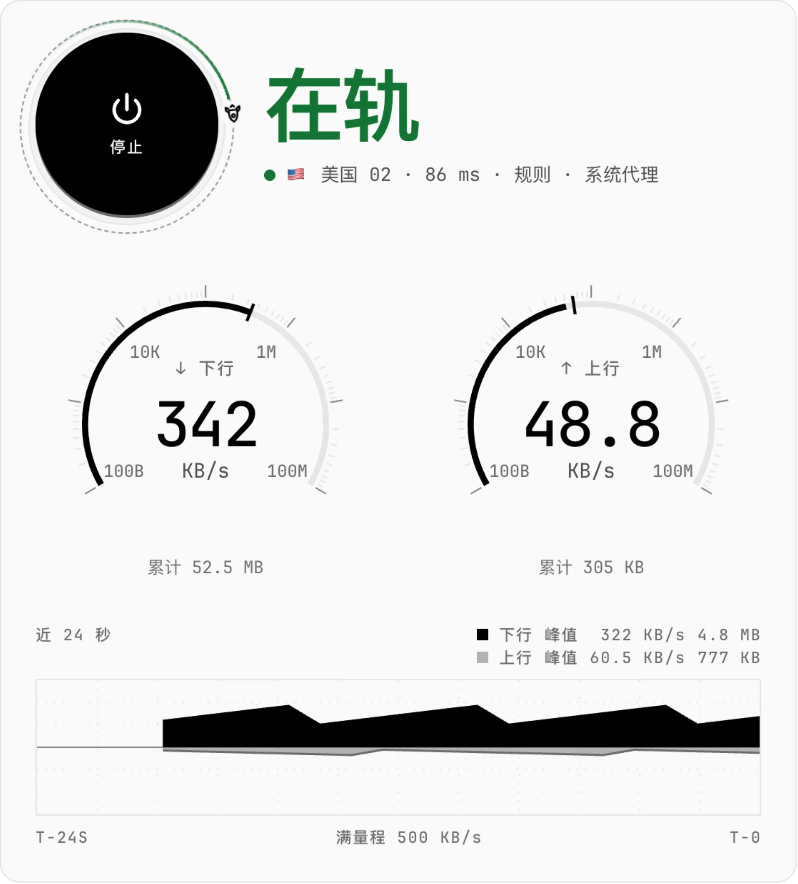
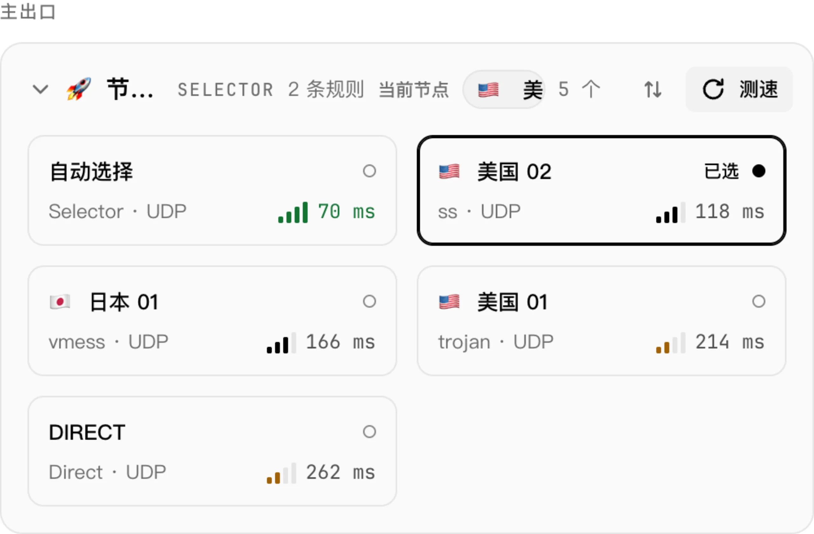
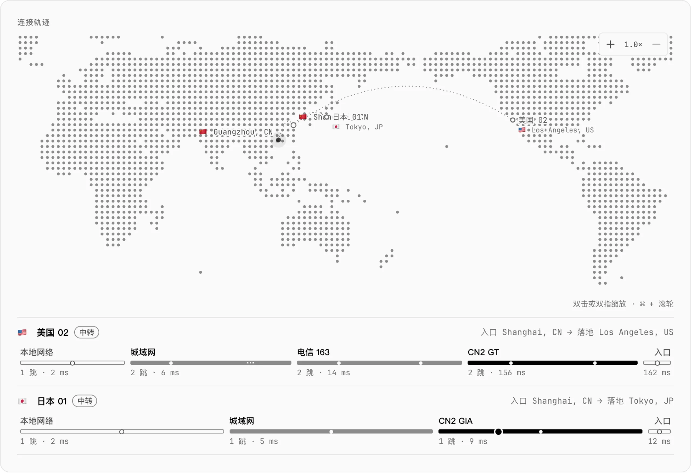
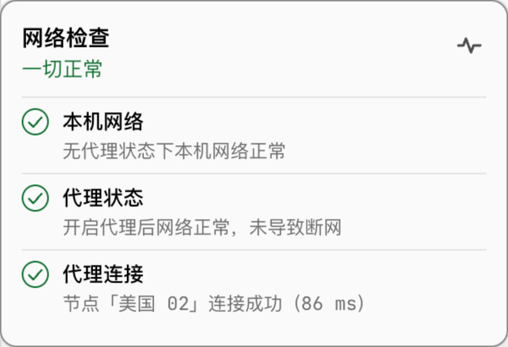
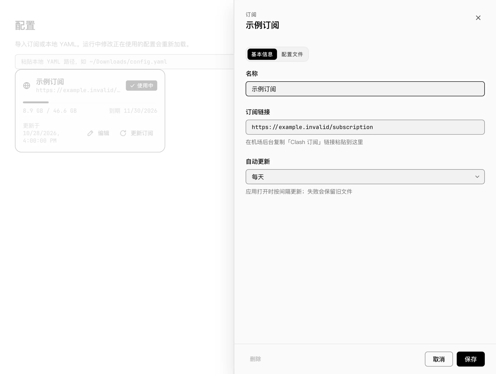
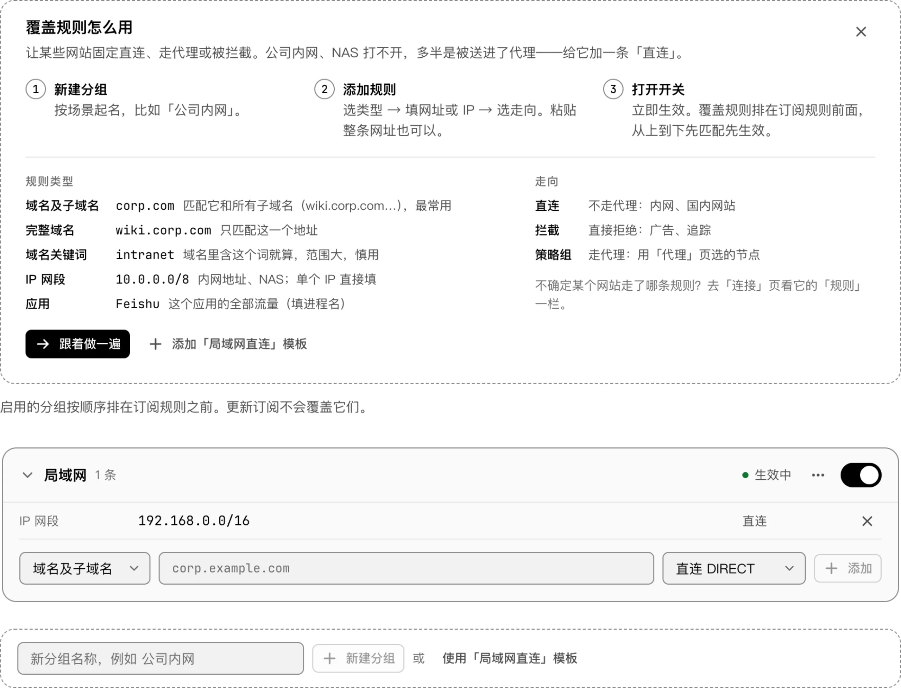
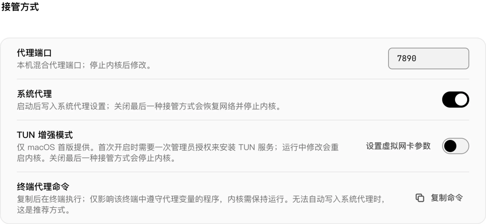

Live throughput gauges and chart
Inspect core status, active exit node, throughput gauges, and a 24-second traffic curve with one-click start and stop.

Rocket Science is a desktop client for the mihomo core on macOS, Windows, and Linux—bringing latency testing, step-by-step network diagnostics, route trajectory, and rule overrides into one calm interface.
macOS 13+ (Apple Silicon / Intel) · Windows 10/11 (x86_64 / ARM64) · Linux (x86_64 / ARM64)

Every screen reflects live core state directly and restores your previous network settings whenever you stop or quit.
Inspect core status, active exit node, throughput gauges, and a 24-second traffic curve with one-click start and stop.

View main and branch policy chains, run batch latency tests, sort or filter nodes, and switch exits immediately.

See entry location, landing node, and hop-by-hop latency across an interactive zoomable map right below the overview.

Verify direct connectivity, proxy takeover, and node reachability in sequence, and confirm with you before switching to a working node.

Import subscription URLs or local YAML files, schedule automatic updates, and edit configuration files directly with validation.

Enabled override groups take precedence ahead of subscription rules and stay intact across subscription updates, backed by templates and a guided walkthrough.

Check live speeds, switch modes or nodes, toggle system proxy or Trusted Wi-Fi, and copy terminal proxy commands without opening the main window.

Configure system proxy, ports, DNS, LAN sharing, and GEO data; stopping the core or quitting the app automatically restores your prior proxy settings.

Onboarding tour, step-by-step network check, and latency test + node selection.
Walks through profile import, launch, latency testing, and network recovery.
Checks direct internet, proxy takeover, and node reachability step by step.
Tests a policy group and switches the active exit node in one view.
System proxy and automatic restore on stop/quit work across macOS, Windows, and Linux; TUN mode is currently macOS only.
| Platform | System Proxy | TUN Mode | Menu Bar / Tray | Package Formats |
|---|---|---|---|---|
| macOS 13+ Apple Silicon / Intel |
Supported (auto set & restore) | Supported (one-time admin authorization) | Menu-bar popover | DMG |
| Windows 10/11 x86_64 / ARM64 · WebView2 |
Supported (auto set & restore) | Not available yet (macOS only) | System tray panel | Installer / Portable ZIP |
| Linux x86_64 / ARM64 · GTK3 + WebKitGTK 4.1 |
Supported (GNOME / KDE) | Not available yet (macOS only) | System tray panel | .deb / .tar.gz |
Release builds are not code-signed or notarized yet; follow the standard first-launch step for your OS.
macOS 13 or later (Apple Silicon and Intel).
If Gatekeeper warns on first launch, right-click the app and choose Open, or run:
xattr -dr com.apple.quarantine "/Applications/RocketScience.app"Windows 10/11 (x86_64 / ARM64, requires WebView2 Runtime).
If SmartScreen appears, choose More info → Run anyway.
Download on Releasesx86_64 and ARM64. Installing the .deb package resolves GTK3, WebKitGTK 4.1, and libayatana-appindicator3-1 automatically (.tar.gz is also available):
sudo apt install ./rocketscience_<version>_<arch>.debOn GNOME, the tray icon requires the AppIndicator extension (enabled by default on Ubuntu).
Download on ReleasesNo. Rocket Science records your prior proxy settings before enabling system proxy or TUN and restores them when you stop or quit.
~/Library/Application Support/RocketScience on macOS, %AppData%\RocketScience on Windows, and ~/.config/RocketScience on Linux (or ROCKETSCIENCE_DATA_DIR if set).
No. There is no telemetry, analytics, or crash-reporting code; outbound requests only occur for your configured subscriptions, connectivity checks, node/IP lookups, and GEO updates.
Bundles mihomo v1.19.33.
GPL-3.0. Third-party dependency notices are listed in THIRD_PARTY_NOTICES.md.